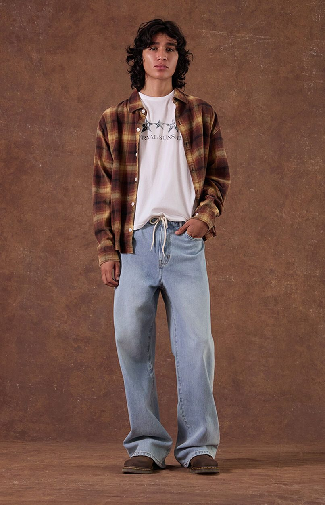
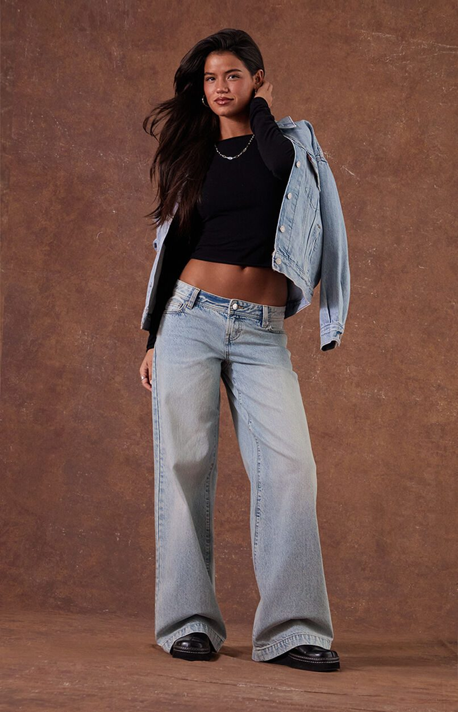
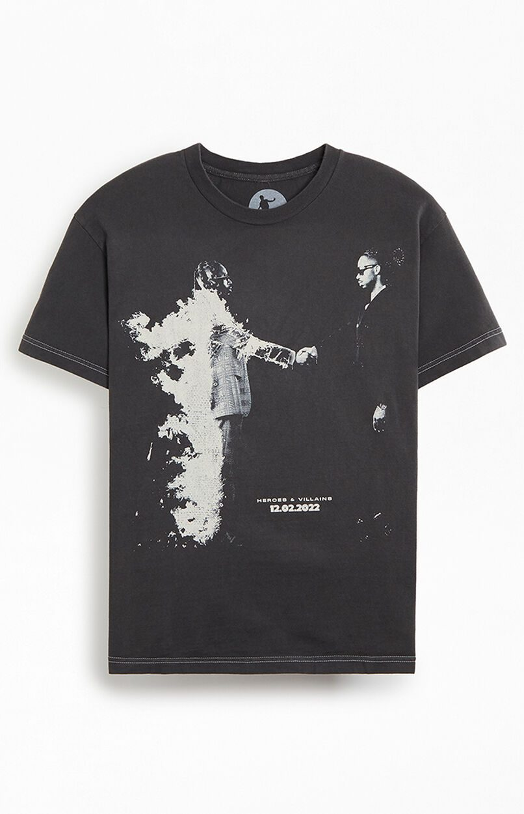
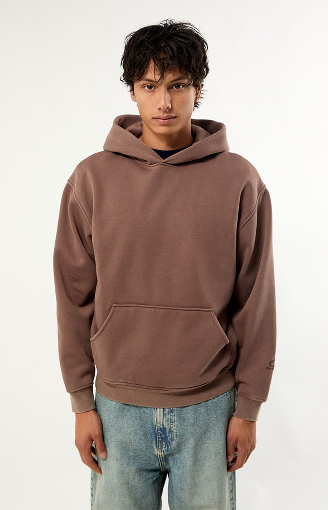
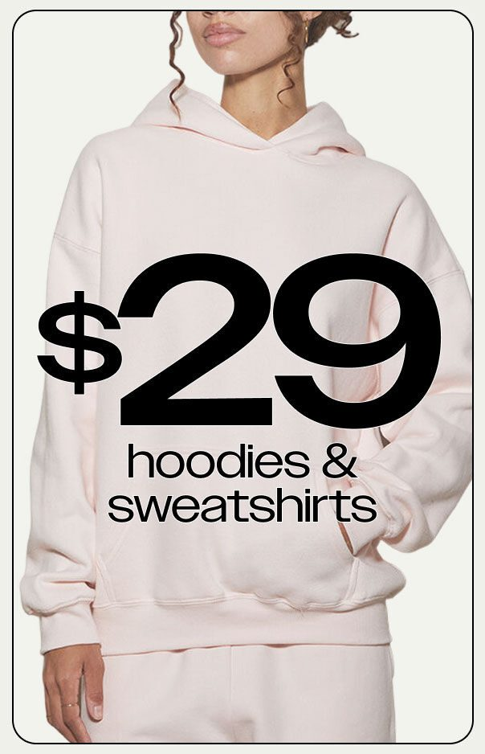
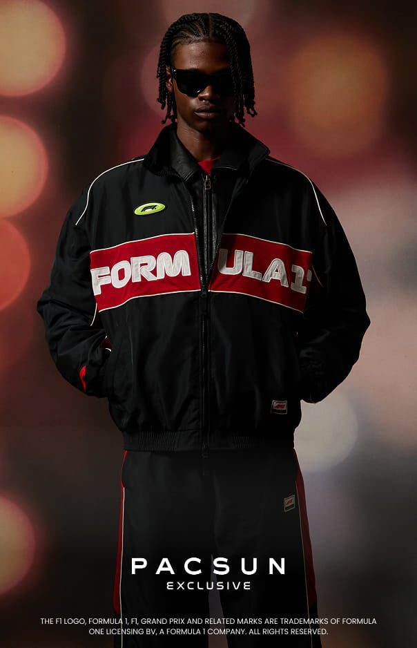

PacSun
Company study · 2026-11-20
Loud price, loose fit. PacSun sells baggy denim, heavy hoodies and printed tees in washed black, brown and faded blue, shot on a brown studio backdrop or sat on a floor. The campaign voice is the sale tile: a huge dollar figure over the garment. Surface is flat color and print, not texture.
 (01)
(01)


(02)

(03)

(04)

(05)

(06)

(07)Palette · measured from images
#6C4638#0D0B0B#FAFAF9#3A383A#97999F#47281DVisual themes
- Baggy and washed
- Key motifs: wide-leg light denim, washed black hoodies, brown plaid. Sub motifs: layered flannel, cropped jackets over tees.
- Price as graphic
- Key motifs: oversized dollar figures on sale tiles, black and white type blocks. Sub motifs: 50% off banners, bundle prices.
- Graphic tees
- Key motifs: printed figures, band and fight-card art on washed black cloth. Sub motifs: faded ink, oversized fit.
- Racing and collab
- Key motifs: color-block jackets, PacSun Exclusive labels, partner brand names. Sub motifs: red and black, motorsport lettering.
Color palette
- Studio brown #6c4638
- The seamless backdrop behind most model shots.
- Washed black #0d0b0b
- Hoodies, tees and jackets.
- Paper white #fafaf9
- Flat-lay grounds and sale-tile type.
- Charcoal #3a383a
- Faded denim shadows and sweats.
- Concrete gray #97999f
- Baggy denim and gray studio walls.
- Dark umber #47281d
- Brown hoodies and the deep backdrop corners.
Visual elements
- Photography
- Models stand or sit against a seamless brown or gray studio ground in even light; products are also shown flat on white.
- Type and graphics
- Large grotesque numerals for prices, black and white sale tiles, small oval stickers.
- Layout habits
- The home page opens on a sitewide sale banner, then portrait tiles by price and category; Men, Women and Kids lead the navigation.
Notable products
- Baggy jeans
- Wide-leg denim in light wash and black.
- Hoodies and sweatshirts
- Heavy pullovers in washed black, brown and pale pink.
- Graphic tees
- Oversized black tees with printed art.
Method and limits
- Palette basis
- six of the board images (the sale tile is left out); k-means in Lab, six clusters kept; the brown studio backdrop is part of the measurement
- Limits
- Pages read 2026-11-20, plain HTTP fetch, no login: https://www.pacsun.com/ , https://www.pacsun.com/mens/ and https://www.pacsun.com/womens/. Product shots were requested at width 1000 of the same file; campaign tiles are 604 px wide originals. Fabric content is not stated; colors are measured from lit photographs.
Credits and licenses
(01) Seated model in a washed black hoodie and brown plaid baggy pants. PacSun. Brand image, study use. source
(02) Men’s flannel over a white tee with light-wash baggy jeans on a brown backdrop. PacSun. Brand image, study use. source
(03) Women’s black crop top, denim jacket and light baggy jeans on a brown backdrop. PacSun. Brand image, study use. source
(04) Men’s washed black graphic tee with a printed figure. PacSun. Brand image, study use. source
(05) Men’s brown pullover hoodie with light-wash jeans. PacSun. Brand image, study use. source
(06) Sale tile: a pale hoodie with a large $29 price over the photo. PacSun. Brand image, study use. source
(07) Black and red racing-style jacket in a PacSun Exclusive campaign image. PacSun. Brand image, study use. source